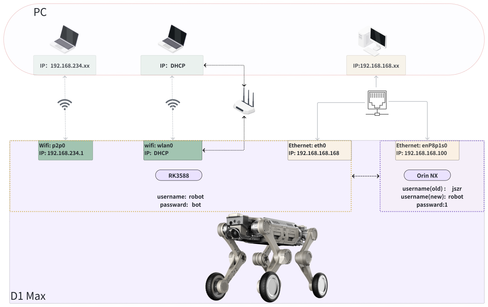

2.5 设备登录
网络连接
wifi 连接登录
wifi名称：XG2WIFI_xxxxxx
wifi密码：12345678
有线连接
使用网线连接机器狗拓展网口和控制端PC
设置控制端PC网口IP为192.168.168.x(不能设置为192.168.168.168和192.168.168.100)

ssh登录
#通过wifi连接
ssh robot@192.168.234.1 #RK3588，password: bot
#通过网线连接
ssh robot@192.168.168.168 #RK3588, password: bot
ssh robot@192.168.168.100 #Orin NX,password: 1